A field worth building on
Two ways to grow a plant off the ground — a trellis a tomato climbs, a wall a cucumber spreads across — three things to work into the soil under them, and a hoe that brings in the whole patch instead of one plant at a time.
Four sticks make two
The mod's first crafting recipe: four vanilla sticks in a two by two, for two crop sticks. Place one on farmland, or on top of another, up to three in a column. Sowing works either into the stick or into the farmland it stands in, because a post two pixels wide is not something anyone should have to aim at — and a stick used anywhere on a column goes on top of it, the way scaffolding stacks.
Three is the cap
The last stick a column may hold stands a little over half the block, so a finished trellis says so instead of making you find out by having a placement refused.
The trellis outlives the plant
A season takes the crop and leaves the sticks standing. Sow it again when the season comes back around.
Tomato only, for now
One flag on the crop roster decides who can climb. Every other plant ignores sticks entirely.
 Crop Stick · 4 sticks make 2
Placing a stick on a tomato already in the ground puts a trellis around
it without disturbing how far along it is.
Crop Stick · 4 sticks make 2
Placing a stick on a tomato already in the ground puts a trellis around
it without disturbing how far along it is.
It climbs before it fruits
A plant reaching the adult age with an empty stick above it puts up a shoot and fills it in, rather than sprouting a finished section. Ripening does not start until there is nothing left to climb, so height is paid for in time — and a ripe plant can never gain a section, because it is already past the age that climbs.
 0
0 1
1 2
2 3
3 filled
filledOne plant, not a stack
Every section carries the same age once the climbing is done, and they ripen together. The foot has roots, the crown tapers to a tip, and the middle is the foot flipped so a tall plant is not one picture repeated. Picking anywhere on it picks all of it — one to three tomatoes per section, so a full trellis pays about three times over.

Foot · roots
Thickened into roots where it meets the farmland, with the stalk carried out of the top to meet whatever is above.

Middle · flipped
Only on a three tall plant. The join rows stay unmirrored, which is what keeps the stalk lined up where the sections meet.

Crown · tapered
Cut back at the top, so the plant visibly ends rather than being cut off by the block above it.
Tomato on a full trellis
Three sections · ripe Summer
 Tomato · 3 hunger
Row 0 of a block meets row 15 of the one above it, so every section is
drawn to agree about those rows — the stalk lines up at each join at every age.
Tomato · 3 hunger
Row 0 of a block meets row 15 of the one above it, so every section is
drawn to agree about those rows — the stalk lines up at each join at every age.
What a season leaves behind
A plant that dies on a trellis stays on it, dried out. Deleting it left a trellis that had been full one day and spotless the next, which read as a harvest rather than a loss. The remains are debris and nothing more: sow the stick again, or let a plant below climb up through it, and the new growth clears them.

Foot
The adult plant recoloured into the four straws the mod's dead crop already uses, then thinned by about a third.

Middle
The foot flipped, for the same reason the living middle is.

Crown
Flipped over a different scatter, since flipping alone would have left it identical to the middle, and cut back at the top like the living crown.
The same trellis, out of season
Three sections · dead AutumnWinter
Trellises in the wild
A village field that regrows on its own can come back on a trellis. One plant in twelve, where the patch came back as a crop sticks can carry — rare on purpose, since a field full of them would make the crafted stick pointless.
Scattered, not banded
The crop is still chosen per three by three patch, so fields keep their bands, but each plant rolls for its trellis separately.
Sticks, not plants
Only the trellis and a young plant go down. It climbs its own sticks exactly as yours does — no free harvest for walking past.
Six in ten are single
Three in ten are two sticks, one in ten is three. A full trellis found in the world is meant to be worth noticing.
Yours are left alone
Putting sticks on a plot claims it. A field will sow itself over its own trellises and never over one you built.
Six sticks make a wall
Three sticks by two, for two crop walls. A wall is scenery before it is farming equipment: it joins its neighbours the way a pane does, needs nothing to hold it up, may be any size and may be built anywhere at all — half of what it is for is being the fence around a garden. Only the plant on it cares about farmland, and only under the one cell it was sown in.
Sow the wall or the ground
Either works, the same bargain the trellis strikes. A lattice a few pixels thick is not something anyone should have to aim at.
Cucumber only, for now
A flag of its own on the crop roster, separate from the one that climbs sticks. The two supports have different shapes and different art, so a plant drawn for one has nothing to show on the other.
The wall outlives the plant
A season takes the vine and leaves the lattice. What died on it stays as dried debris until new growth comes through and clears it.
A cucumber fills a box
A plant is a box three cells wide and three tall, with the cell it was sown in at the bottom of the middle column. It fills that box by spreading into whichever panel it can reach, one cell at a time, so its shape is never the same twice — and a cell high in the box may have nothing at all beneath it, because a vine on a wall is holding on rather than standing up.
Cucumber on a full wall
Nine cells · ripe Summer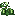
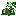
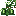
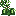
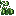
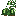
 Cucumber · 2 hunger
The middle column is drawn as the stem the plant was sown as; the arms
reach out of it. Each row has art of its own, so the vine reads as one plant climbing
rather than nine copies of a tile.
Cucumber · 2 hunger
The middle column is drawn as the stem the plant was sown as; the arms
reach out of it. Each row has art of its own, so the vine reads as one plant climbing
rather than nine copies of a tile.
Every cell knows its address
Which arm, which row, stored on the cell itself. A plant whose shape has holes in it cannot be walked back to its root the way a stick column can.
One plant, one harvest
Picking anywhere on it picks all of it, one to three cucumbers a cell, and the whole crop lands at the root's feet.
It spreads again
Picking leaves the plant at the adult age — so a wall you extend after a harvest is a wall the same plant will grow into.
Three things to work into the soil
Compost is made in the composter you already have, out of one extra ingredient. Drop a catalyst into it and the batch is labelled; fill it as usual and it hands over that compost instead of bone meal. The three catalysts are gathered three different ways on purpose — ash is burnt, bark is stripped, manure is waited for — so the pipeline is not three trips to the same furnace.
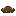
→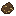
Manure · waited for
Left behind by animals that graze, about one an animal every six minutes. A pen that is kept is a pen that pays.
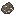
Ash · burnt
Smelted from leaves or saplings, which vanilla has no recipe for. Logs already give charcoal; the garden waste had nowhere to go.
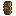
→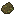
Bark · stripped
Knocked off a log by an axe. The strip still happens exactly as it did; the bark is what was going to be wasted.
Eight barks, one job
Oak through cherry, each with the colour you already know. Any of them labels a batch as creeping — the eight sprites are worth keeping, the eight behaviours are not.
A labelled composter says so
Coloured dust drifts off it in the colour of the compost it will hand over, so the one you walked away from mid batch is not a mystery.
One label per batch
A second catalyst is refused rather than eaten. Collecting is what clears the label, and a full labelled composter empties on the click that collects it.
Nine squares a go
Compost works into every bare piece of farmland in the 3×3 around where it was used. Clicking the plant works as well as clicking the dirt.
Rich, warm, creeping
Three kinds, one axis each, and never two at once. Treated soil is still ordinary farmland underneath — every check in the game that asks whether something is farmland still says yes — it just has something in it, and shows it.
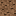
Rich · feeds the harvest
One more roll of the crop's own loot table. Tools and Fortune still decide the numbers, and a crop that is picked rather than torn up is paid the same bonus.
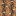
Warm · hurries the growing
A second growth roll rather than a changed formula, so light, moisture and neighbours still count — and any mod's crop gets it without being asked.
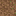
Creeping · hurries the spreading
Half the wait for a vine to take the next panel, or a tomato to climb the next stick. Nothing at all to a plant with nowhere to go.
A hoe brings in more than one
Right click a ripe crop with a hoe in hand and the square around it comes in too. What a harvest is does not change — every plant in the square is taken by its own rule, so wheat is torn up and sown again, and anything on a trellis or a wall is picked and left standing. It is a wider click, not a different kind of harvest.
| Hoe | Reach | Crops at most |
|---|---|---|
| Wood, stone | The one clicked | 1 |
| Iron, gold | 3×3 | 9 |
| Diamond | 5×5 | 25 |
| Netherite | 7×7 | 49 |
One durability a click
However much came in, and only when something did. A wooden hoe reaches nothing extra and is charged nothing for it.
A trellis still pays once
Plants harvested whole from a root are counted by root, so a square covering four cells of one cucumber wall does not pay four times.
Berry bushes are left alone
They are not sown on farmland and never were part of this. Picking a hedgerow with a farming tool is not what the tool is for.
Sneak still means sneak
The same bargain the single crop harvest keeps: a sneaking click is the vanilla one, so a tilled row stays possible to build on.